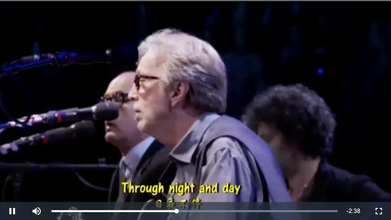
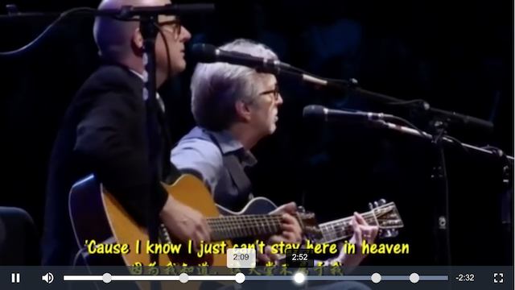

Video.js 是一个简洁、漂亮的 HTML5 播放器，支持字幕，还可支持 Flash(不支持 HTML5 时自动切换到 Flash)，使用很简单，也能自定义插件:
Video.js is a JavaScript and CSS library that makes it easier to work with and build on HTML5 video. This is also known as an HTML5 Video Player. Video.js provides a common controls skin built in HTML/CSS, fixes cross-browser inconsistencies, adds additional features like fullscreen and subtitles, manages the fallback to Flash or other playback technologies when HTML5 video isn’t supported, and also provides a consistent JavaScript API for interacting with the video.

入门示例 下面是 Video.js 最简单的例子(源码 ):
1 2 3 4 5 6 7 8 9 10 11 12 13 14 15 16 17 <!DOCTYPE html > <html > <head > <meta charset ="utf-8" > <title > Video.js | HTML5 Video Player</title > <link href ="video-js.min.css" rel ="stylesheet" > <script src ="video-js.min.js" > </script > </head > <body > <video id ="video-id" class ="video-js" controls autoplay preload ="auto" width ="640" height ="360" data-setup ="" > <source src ="x.mp4" type ="video/mp4" > </source > </video > </body > </html >
提示:
给 video 一个 id 属性很有必要，因为 video#video-id 会被包裹在 div#video-div 中，方便以后操作，例如要修改 video 的大小: $('#video-id').width(320).height(180)
不能删除 data-setup 这个属性，删除了 Video.js 就不会生效了
为了效果更好，video 的宽高设置为视频的宽高，或者是等比缩放的大小，一般 16:9 的比较多
更详细的文档请阅读 Video.js Documentation
自定义关键点 有时候需要在播放器的进度条上显示一些关键点的信息，例如电视剧里主角被坑、跳崖时放一个关键点，主角光环，落魄只是暂时的，然后剧情大反转时都是放置关键点的理想地方:

只要在播放器的 DOM 创建好后，在进度条上用 JS 插入一些 DOM Element 就可以了，请参考:
1 2 3 4 5 6 7 8 9 10 11 12 13 14 15 16 17 18 19 20 21 22 23 24 25 26 27 28 29 30 31 32 33 34 35 36 37 38 39 40 41 42 43 44 45 46 47 48 49 50 51 52 53 54 55 56 57 58 59 60 61 62 63 64 65 66 67 68 69 70 71 <!DOCTYPE html > <html > <head > <meta charset ="utf-8" > <title > </title > <script src ="http://cdn.bootcss.com/jquery/1.9.1/jquery.min.js" > </script > <link href ="video-js.min.css" rel ="stylesheet" > <script src ="video-js.min.js" > </script > <style media ="screen" > .video-js .vjs-slider { margin-left : 0 ; margin-right : 0 ; } .video-js :focus { outline : none; } .point { position : absolute; top : 50% ; margin-top : -2px ; width : 4px ; height : 4px ; border-radius : 10px ; background : #DDD ; transition-duration : 0.2s ; z-index : 10 ; } .point :hover { background : white; box-shadow : 0 0 5px 2px white; } </style > </head > <body > <video id ="video-id" class ="video-js" controls autoplay preload ="auto" width ="640" height ="360" data-setup ="" > <source src ="x.mp4" type ="video/mp4" > </source > </video > <script > videojs("video-id" ).ready(function ( var $progressBar = $('.vjs-progress-control' , "#video-id" ); $progressBar.append('<a href="javascript: void(0);" name="1" class="point" style="left: 10%"></a>' ); $progressBar.append('<a href="javascript: void(0);" name="2" class="point" style="left: 30%"></a>' ); $progressBar.append('<a href="javascript: void(0);" name="3" class="point" style="left: 60%"></a>' ); $progressBar.append('<a href="javascript: void(0);" name="4" class="point" style="left: 80%"></a>' ); $progressBar.append('<a href="javascript: void(0);" name="5" class="point" style="left: 90%"></a>' ); $('#video-id' ).on('click' , '.point' , function (event ) console .log('point' , $(this ).attr('name' )); }); $('#video-id .vjs-progress-control' ).on('mouseenter' , function ( $('.point' ).css('margin-top' , '-6px' ).width(12 ).height(12 ); }).on('mouseleave' , function ( $('.point' ).css('margin-top' , '-2px' ).width(4 ).height(4 ); }); }); </script > </body > </html >